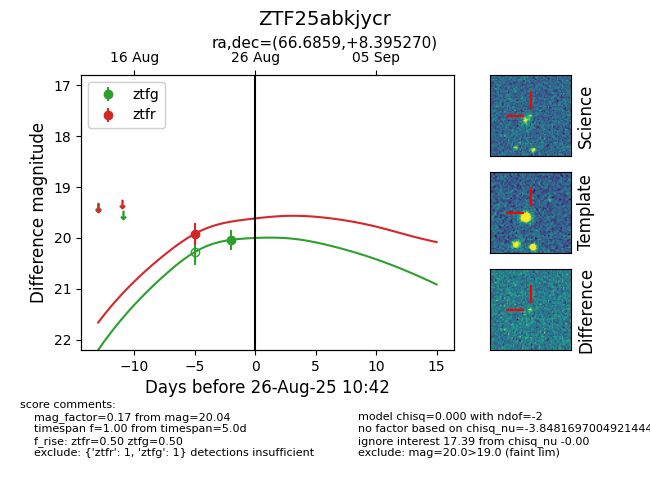

Target ZTF25abkjycr at 2025-08-26 10:53, see:
FINK: fink-portal.org/ZTF25abkjycr
Lasair: lasair-ztf.lsst.ac.uk/objects/ZTF25abkjycr
ALeRCE: alerce.online/object/ZTF25abkjycr
alt names
ZTF25abkjycr (ztf,fink)
coordinates:
equatorial (ra, dec) = (66.6859,+8.39527)
galactic (l, b) = (186.5450,-26.94260)
photometry
last ztfg=20.04, ztfr=19.92
1 ztfg, 1 ztfr detections
